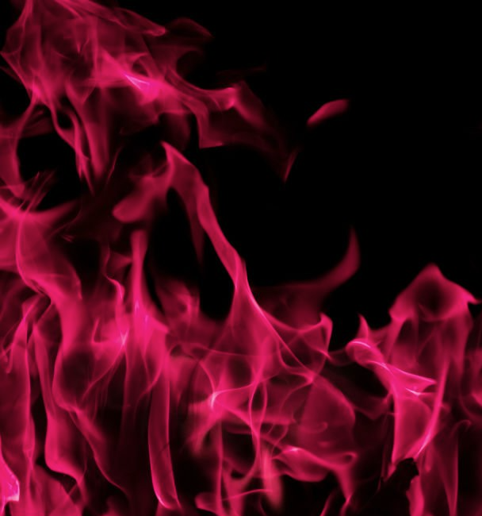

Oferta specjalna
Płomienny suśli taniec
Nasze susły znają każdy rytm — od klasycznych walców po freestyle przy gitarowych riffach. Tworzymy choreografie, które rozkręcają przyjęcia i prowadzą gości prosto na parkiet.
- Choreografie w duetach, trio lub pełnej formacji ognistej.
- Efekty pirotechniczne w pełni kontrolowane przez ekipę Flamekeeper.
- Warsztat taneczny dla publiczności na rozgrzewkę.